anova でヒレカツ
anova でヒレカツ
これまで比較的安全なコンフィやローストビーフ、ステーキ等で練習してきたが、満を持して豚肉を低温調理する。
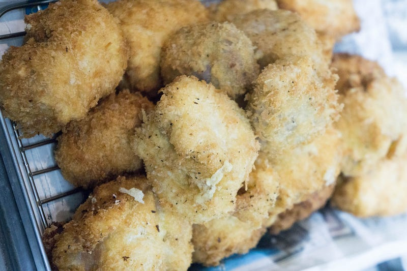
前回はこちら：
anovaというと皆さんとにかく豚肉を調理されているのですが、我が家では小さい子がいることもあり「とにかくまず練習と、温度と火の通り具合を理解できてからだ！」ということで豚肉の調理は後回しにしていました。ですが、そろそろいける！という気持ちがでてきたのでとうとうチャレンジです。
使う肉は豚ヒレブロック、720円なり。
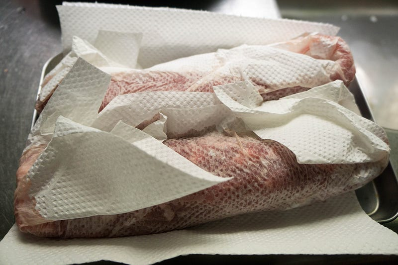
まず軽く塩をして少し置いておきます。
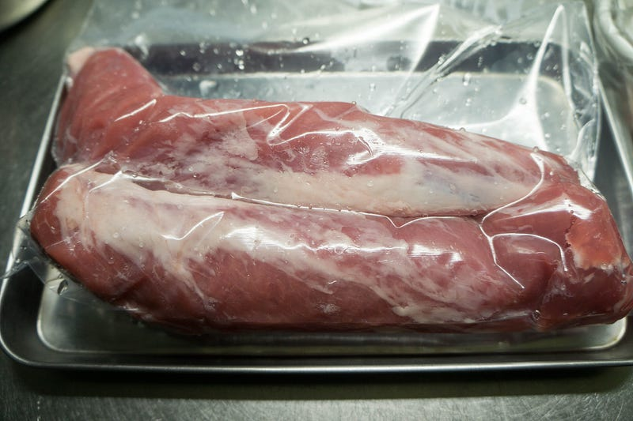
真空パックもどき。ラバー好きな人にはたまんないのかな、こういうの。
で、ここからanovaの出番。参考にするレシピですが、検索するとやはり上位に出てくるものは小林銅蟲氏。
こんにちは。またAnovaです。僕はしばしばキロ単位で調理するので炊飯器や シャトルシェフ には入りきりませんから重宝しています。 先日オフィスDで豚ロースを63℃・3時間やったらガチガチに固くなってしまい、今回はリベンジと実験を兼ねて…negineesan.hatenablog.com
しかしうちは一般家庭なのでこういうのはいらないんです…
次によくでてくる（気がする）のはid:buchineko_okawari氏。
Anova Precision Cooker を使った低温調理の記録です。 超級カツとは、本日（11/22）発売の小林銅蟲「めしにしましょう」三の膳に登場する、 予め低温調理を施した豚肉を巨大な塊のままトンカツにする という料理で、作中…buchineko-okawari.hatenablog.com
ヒレ肉だからとりあえずなんかに転用するにしても楽かなーと思っていたのですが、最終的に豚肉の低温調理に参考にしたのはこちら：
Small enough to cook relatively quickly, but large and elegant enough to make a centerpiece roast, pork tenderloin is…www.seriouseats.com
ここに載ってる表を参考に60℃で4時間やってみた。当然温度や衛生面での配慮は自己責任で…
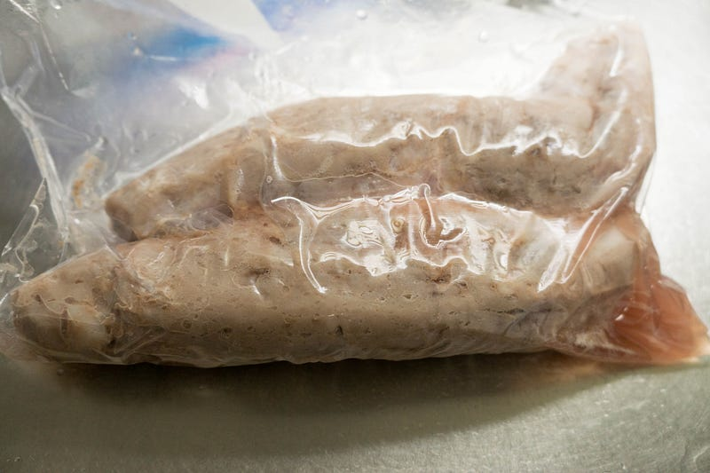
4時間後。本当、低温真空調理は処理後の絵面が美しくない。
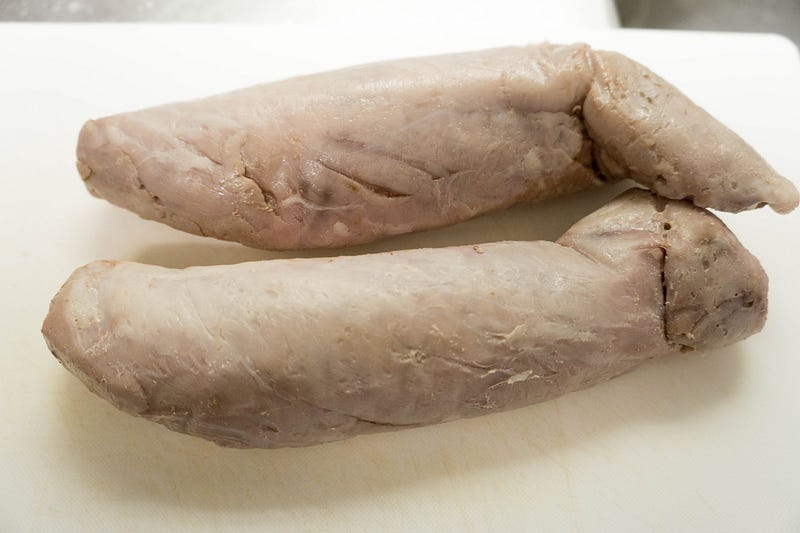
水気を拭き取ります。正直、見ても一瞬これはどんな物体なのかわからない。この時点で相当柔らかいのに気づくので戦慄する。
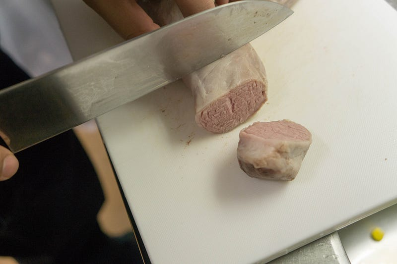
今回我々は普通の人間向けの大きさにするために先にこのブロックを大きめの一口サイズに切ることにした。後から考えるとコレは失敗だったのだが、味にはそれほど関係なかった。
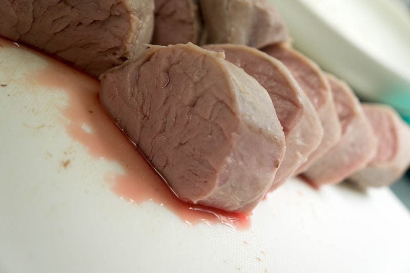
なるほど？生？
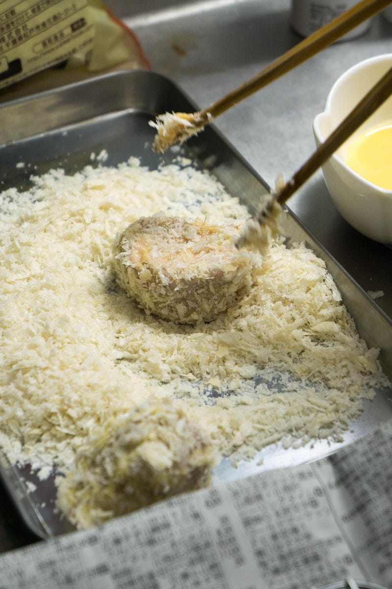
揚げる工程は普通。一応小林銅蟲氏にならって衣二枚付けも一部やった。
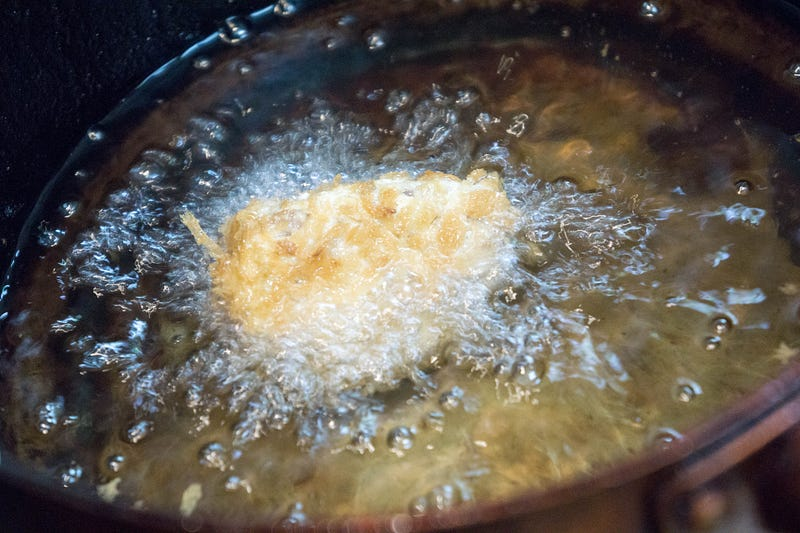
200℃+の高温でズバー。で、先ほどの失敗なんだけど、高温であげてるとすぐ肉をあげないといけないので余裕がない。チマチマ小さい肉を処理したり、「あ、卵が足りない！」とかやってるとワタワタしてしまう。これは一回ドーン、と揚げて切り分ける方が調理工程としてはシンプルになるので、そちらのほうがよさそう。
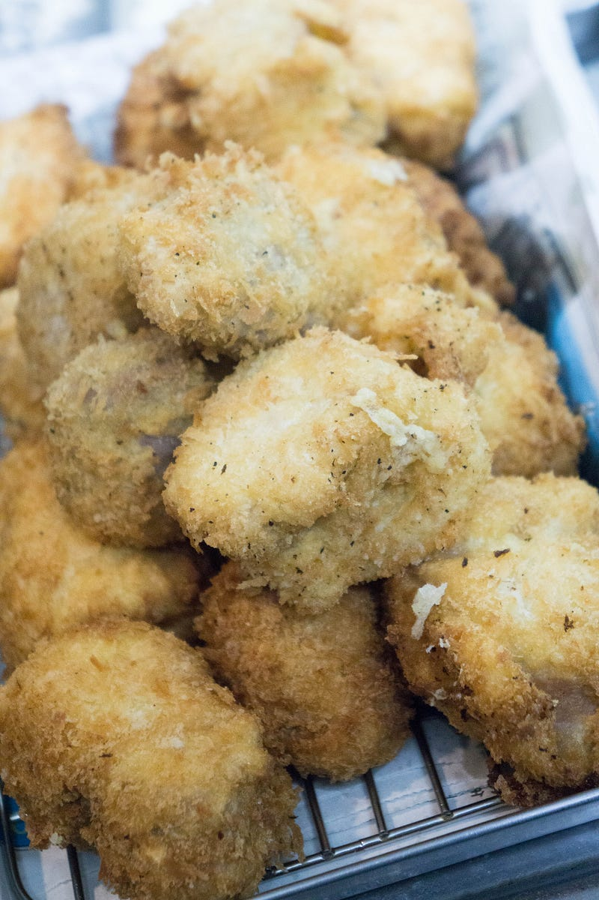
高温なのでどうしても焦げたパン粉がついちゃう。見てくれを気にするならこの辺りは要改善。
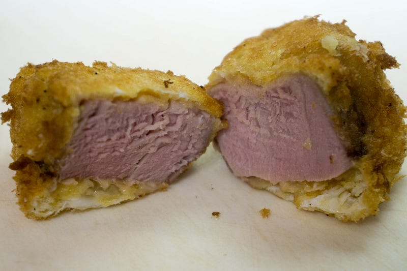
おおおおおお… 肉が… 裂けてる…
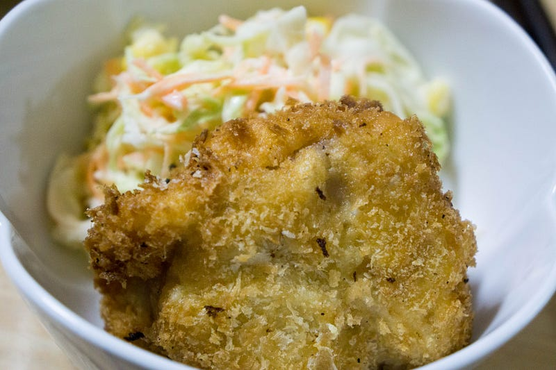
できあがり。
食べた一口目、確かに声が出た。見た目はトンカツなのに、食感が角煮を食べてるみたい。意味がわからない。そして、ぱさついておらず、ジューシー。うまい、うまい！正直何個でも食べられそうな勢い。
ヒレカツって個人的にどうしても小さくて（比較的）硬くて、のわりに旨味が少ないイメージだったんだけど、そういうの全然なくて本当にうまい。
ところが、しばらく食べてて気づいた。これはこういう料理としてはうまい。しかし「トンカツが食べたい！」と思った時に食べたいのはこれだろうか？と。これは好みの範疇なので、色々あると思うけど、我が家ではもっと肉を噛みたい、という欲求がありそう。なので次回やるときは調理時間を半減して60℃2時間でやってみたいと思う。
しかし元の肉が720円という事もあり、正直満足感は高い。やー、低温調理面白い。
※ WiFi タイプになります。900W スマホと連動してお鍋の水温をコントロール。どこからでも調理 ポンプ速度：毎分7〜8リットル、360度回転のポンプ アプリで操作可能 設定温度に達したらスマホにお知らせ アプリはAppストアUSな…amzn.to
次の記事はこちら